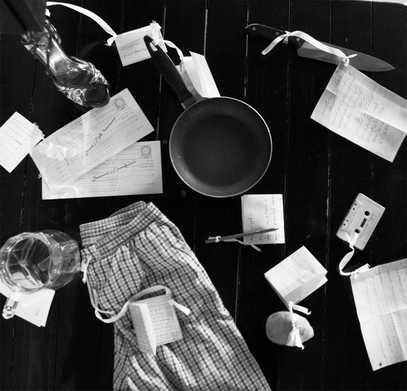
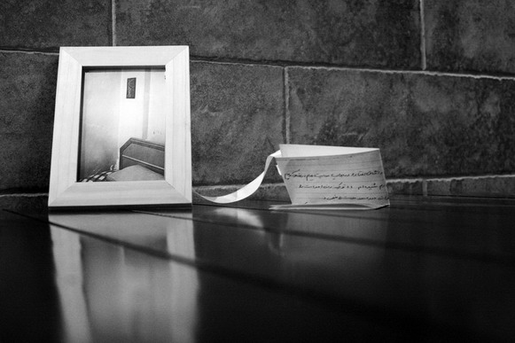
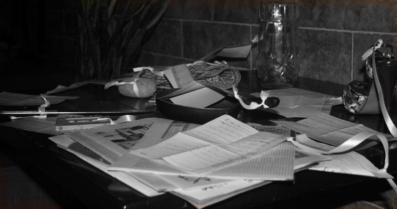
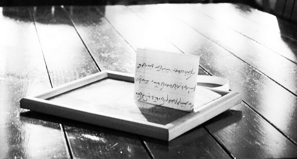

|
|

چشمها گاهی بهتر می شنوند
گزارشی از برگزاری نمایشگاه روایتهای زنان درباره خشونت
سه شنبه9 آذر 1389
تغییر برای برابری: آدمها حالات عجیبی دارند! گاه فقط گوشهایشان برای شنیدن کافی نیست. انگار گوشها پس از مدتی به ارتعاشات صدا عادت می کنند و دیگر حساس نمی شوند به برخی حروف, برخی کلمات. حالا هر چه می خواهی فریاد بزن. صدایت گم می شود در تکرارها و فریادها و فرکانسها. همچنان که در این بحبوبه برای شنیده شدن دست و پا می زنی ناگهان به سرت می زند که چشمها را جایگزین گوشها کنی. شاید هم افاقه کند...

داستان روایتگری زنان از خشونتهای پیدا و پنهان خانه و کوچه و شهرشان دستمایه نمایشگاهی شد در تهران تا خشونت را با چشمهایمان بشنویم. این نمایشگاه همزمان با 25 نوامبر, روز جهانی محو خشونت علیه زنان, به مدت دو روز برگزار شد.
روایتهای موجود در این نمایشگاه حاصل تجربه نوشتن زنانی است که در کارگاههای خشونت کمپین یک میلیون امضا شرکت کرده اند و آموخته اند که گفتن و دوباره گفتن, از بار رنج آور خشونت می کاهد و تو را درون حلقه ای قرار می دهد که دیگر احساس تنهایی نکنی.

آنچه در این نمایشگاه در معرض دید قرار گرفت ابزار و اشیای زندگی روزمره بود که هر یک تکه کاغذی با خود همراه داشتند. روی هر کاغذ داستانی بود از زنی که دیدن آن شیء همیشه برایش یادآور خشونتی بود که شاید سالها عذابش داده و می دهد. عکسهای قاب گرفته نیز روایت زنان است از جایی یا چیزی که حضورش در نمایشگاه غیر ممکن بود.

چیدمان آثار در این نمایشگاه نه در پی جلب توجه مخاطب, بلکه بیشتر به دنبال درگیر کردن او به شکلی غیرمستقیم بود؛ به نوعی ساختن گوشه ای از زندگی و نه نمایش آن. اشیاء خود را به فضای مخاطب تحمیل نمی کنند, او را مجبور به دیدن و خواندن نمی کنند, تنها به حس کنجکاوی اش فرصتی می دهند تا نگاهی به اولین شیء بیاندازد و اگر بیشتر علاقمند شد سری هم به بقیه اشیاء بزند.

روایتهای استفاده شده در این نمایشگاه به نوعی خاطرات زنان است که این بار نه تنها شیرین نیست, که تلخی خشونتی روزمره را عریان می کند . خاطراتی که معمولا گفته نمی شوند, در هاله ای از هراس و شرم پیچیده می شوند و به گوشه ای دور از دسترس تبعید. اما در این نمایشگاه این خاطرات هم منتشر شده و هم با استفاده از شیء و عکس تجسم می یابند و این همان جاست که برگزار کنندگان این نمایشگاه کوشیده اند چشم مخاطب را برای شنیدن خاطرات زنان از خشونت به کار گیرند. باشد که بهتر بشنوند و از یاد نبرند...